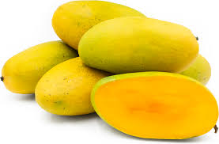
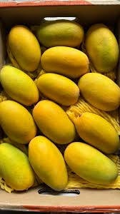

Introduction
Dasheri mango is one of the most popular mango varieties in India. It is famous for its sweet taste, juicy pulp, and strong aroma. It is loved for fresh eating and summer desserts.
Origin
Dasheri mango originated in Malihabad, Uttar Pradesh. It is one of the oldest and most famous mango varieties grown in North India.
Taste & Texture
Dasheri mangoes are very sweet, juicy, and aromatic. The pulp is soft, fiberless, and smooth, making it a favorite among mango lovers.
Uses
• Fresh eating
• Mango shakes
• Juices
• Ice creams
• Sweets and desserts
Health Benefits
• Rich in Vitamin A and C
• Improves digestion
• Supports immunity
• Good for skin and eye health
Season
Dasheri mangoes are available from June to July.
⬅ Back to Home